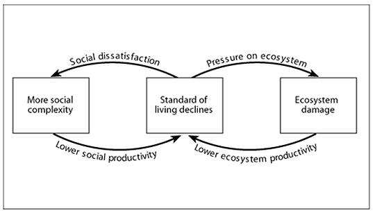

EcoTipping Points around the World: The Hope for a Sustainable yet Profitable Future?
- Author: Sandra Brauner
- Return to main Resources page
Explanatory Text
The following work is a research paper, bringing together ideas from several different sources and illustrating their points with graphs. However, rather than following the standard academic format, I have chosen to present this paper in a more creative way, conveying my fascination with the topic at hand. In fact, I have decided to write it in a way as though I was speaking to an audience at an imaginary workshop on “Strategies to Achieve Sustainability in the Future” in the hope of making matters more interesting.
For this reason, you will hear my voice and opinions shine through at certain points in this paper as I feel extremely passionate about this topic and try to be an active advocate for the little steps that each and every one of us can take to make a difference and render the world a more sustainable place.
Originally, I started out with little idea as to where I am going but through a steady research process I finally stumbled across the notion of “Eco Tipping Points,” which immediately grabbed my full attention. I just think it is one of the most fascinating concepts I have ever come across and I believe it ties in really well with everything we have been talking about in this class.
Here, then, is my interpretation of a way in which we might be able to prevent a huge catastrophe and not only save humankind and the planet we are living on, but also the whole range of ecosystems and other living organisms existing in this world today.
Research Paper
Ever wonder whether there is a way to reverse the mostly destructive effects that we as humans tend to have on our environments? For several decades, ecological anthropologists have been discussing this question and it finally seems as though they have come up with a tentative solution that may guide us into a more sustainable yet profitable future. The name of the proposed concept? – “Eco tipping points.” As we shall see by means of case studies from all over the world, these three words combine to form a notion that may bring about major changes in the ways in which we currently lead our lives, possibly guiding us to a more community-oriented approach to sustainability and thus improving not only our own lives but also the living conditions of people in developing countries.
As we increasingly become aware of the dwindling abundance of natural resources such as fossil fuels and rainforests and of all the implications that this decline carries with it into future generations, our attention has been focused more and more on the concept of sustainability by the media, politicians, and ecological anthropologists. According to Alan Fricker (2006: 192), sustainable development is defined as “development that meets the needs of the present without compromising the ability of future generations to meet their own needs.” As John Cairns (2004: 1) notes, however, a sustainable lifestyle is difficult to achieve due to the existence of what he calls, “tipping point situations,” which crop up when destabilizing forces surmount those that create stability, thus tipping the global ecosystem into disequilibrium. Although using this concept may help to explain why we have not yet succeeded in living more sustainably, it does not actually provide us with an alternative approach. Instead of offering possibilities for change, Cairns’s concept merely describes the nature of the current problem.
This is where the concept of eco tipping points comes into play. According to Gerald Marten (2007a), eco tipping points work because entire communities mobilize their efforts to put environmental technologies into effective use. Additionally, in showing “how the same forces that endanger environments and communities can be harnessed to heal them, eco tipping points offer a new paradigm for restoring them” (Suutari and Marten 2007a). In equating them with “levers that can turn the environment from decline to health and sustainability,” Suutari and Marten (2007a) emphasize the catalytic effects eco tipping points can have on the reversal of change within eco-social systems. This approach is very holistic, in that both human and natural environments are fully taken into account, opening up possibilities for finding the “negative tipping points” that destabilize the system and magnifying the potential for coming up with “positive tipping points” that can lead the environment toward greater sustainability. According to Marten (2005), while negative tips are “switches” from a desirable equilibrium domain to “a deterioration of the system’s services,” positive tips are “switches” from a destabilized system to one in which equilibrium is restored. Positive tips, then, turn around deterioration, thus leading the human-environment system toward greater sustainability (Marten 2005).
Now, the actual concept of tipping points is not a novelty. In fact, it has been around for about fifty years, with scholars such as John Cairns indirectly attempting to address this notion. However, while the former have largely focused on what Suutari and Marten (2007a) call “negative tipping points,” Suutari and Marten’s approach is unique in that their concept of tipping points emphasizes the possibility of positive change within the realm of our human and natural environments. Such an approach is entirely new. In fact, by introducing the possibility of transforming “vicious cycles” into so-called “virtuous cycles” by letting “nature’s own processes do most of the work” (Suutari and Marten 2007a), the concept of eco tipping points completely jumbles previously accepted notions that vicious cycles are irreversible.
The graph below shows the destructive feedback loop, clarifying that the two negative tips subsequently destabilizing the community are the introduction of commercial trawling and the introduction of charcoal cutting and aquaculture (Suutari and Marten 2007d).

This second graph (below), in contrast, illuminates the nature of the positive tip that could turn around deterioration, restoring equilibrium in Trang Province – that is, the introduction of sustainable community mangrove management strategies by the Yadfon development organization (Suutari and Marten 2007d).

Another example of how local citizens can successfully restore equilibrium in their human and natural communities occurred in 1970 in Arcata, California (Suutari and Marten 2007c). Citizens were faced with the problem that continued discharge of their wastewater into Humboldt Bay would lead to environmental degradation (Suutari and Marten 2007c). Realizing this they transformed a seemingly hopeless situation into a sustainable and profitable ground-breaking venture (Suutari and Marten 2007c). Instead of buying into an expensive regional sewage processing plant that not only would have devastated the local economy but would also have resulted in major changes in the city landscape through the construction of a new highway connecting the town with the processing plant, Arcatans decided to transform “an old logging pond and city dump” into an extensive marshland area that would help purify their wastewater by “letting nature’s own processes do most of the work” (Suutari and Marten 2007c). The result? The marshlands filter the city’s wastewater while simultaneously providing students with a research site, “attracting wildlife, birdwatchers and other visitors” (Suutari and Marten 2007c), thus fuelling the local economy rather than devastating it. The most important lesson from this case study, then, is the significant role of feedback loops to the process of restoring stability in the environment.
Indeed, the entire concept of eco tipping points depends on the fact that feedback loops “expose the strategic points at which [vicious] cycles can be reversed” (Marten 2007b). This theory has been supported by other case studies, for example, on Apo Island, in the Philippines, a marine sanctuary has revived a coral reef fishery, thereby rescuing the Islanders who are economically dependent on it (see Marten et al. 2005: 10-11). Similarly, the construction of rainwater catchment dams in Rajasthan, India, has revived dried-up rivers, thus helping shrinking farming villages survive (Marten 2007d). Likewise, in Burkina Faso, a so-called “Women’s Agroecological Project” has not only helped to restore soil fertility and improved the local economy but has also elevated the status of rural women by training them in the sustainable usage of a fertilizer (Suutari and Marten 2007e). Another instance occurred in Uganda where the government-led mobilization of different kinds of institutions and an impressive education campaign helped to minimize the spread of AIDS (Suutari and Marten 2007f). Finally, a locally managed microhydropower (MHP) project in Zimbabwe helped to improve the community’s access to electricity by using water as a source of energy, which can be used for irrigation and household use (Suutari and Marten 2007g). This project had powerful ramifications, including water purification which in turn reduces the occurrence of disease, simultaneously allowing for better irrigation of lands which increases food security and farmers’ incomes (Suutari and Marten 2007g). These outcomes led to higher school attendance by children, increasing the job satisfaction of teachers and the period of time they remained at the school (Suutari and Marten 2007g). This case, then, is the epitome of the potential for positive change by applying the concept of eco tipping points.
All of these instances demonstrate that stabilizing feedback loops can replace destructive feedback loops and thus save the ecosystems in question (Suutari and Marten 2007b). Moreover, both of these cases “show how human and natural systems can tip together out of decline and towards greater health and sustainability” (Suutari and Marten 2007b). Indeed, rather than having to rely on expensive technologies or on the highly structured rules imposed by governments, local citizens can come up with their own simple techniques that can help to restore equilibrium within their human and natural communities (Suutari and Marten 2007b). Besides, these success stories tell us that eco tipping points are efficient not only due to the collaborative efforts by the local community but also because they “mobilize nature and let natural social processes do the work” (Marten 2005: 81). The fact that people work with nature rather than against it also demonstrates that eco tipping points are co-adaptive, in that “they help social system and ecosystem to fit together, functioning as a sustainable whole” (Marten 2005: 82). Also, symbols such as the “shared community spaces” that are generated by eco tipping points reinforce the positive tip, further motivating the community to continue to concentrate their efforts on maintaining the new-found equilibrium and thus enhancing resilience (Marten 2005: 82).
What is more, these case studies also show that outside stimulation and facilitation by NGOs or other organizations are vital to the success of eco tipping points and that eco tipping points not only use what Marten calls, “social and ecological memory” but also “social and ecological diversity” as a resource (see Marten 2005: 82). Another important lesson is the importance of the demonstration effect, for example, after realizing that a community has obtained socio-economic benefits by employing eco tipping points, another community is much more likely to imitate their use of positive tips to break the chain of vicious cycles. Lastly, and perhaps most importantly, Marten’s research highlights that “catalytic actions and mutually reinforcing positive feedback loops” play a central role in the transformation of vicious cycles into virtuous ones (Marten 2005: 81).
Due to their effectiveness, eco tipping points seem to provide an important counterpoint to the Domino theory, outlined by de Blij (1991). According to this theory, destabilizing forces impacting one area can lead to negative changes in adjacent areas (de Blij 1991: 3). In contrast, however, if we were then to apply eco tipping points, we might be able to transform those negative changes into ones that go into a more positive direction, thus having sustainable rather than degrading effects on adjacent regions. Similarly, eco tipping points seem to help break the vicious cycle inherent in what Marten calls (e-mail to author, December 6, 2007), “Tragedy of Serial Degradation,” referring to the process by which unsustainable human activities can gradually transform renewable resources into non-renewable ones.

This figure above on the right shows some of the vicious cycles that can be transformed into sustainable feedback loops by eco tipping points (Marten 2001). According to Marten (2007b), one small positive tipping point is sufficient to turn around the destructive effects of vicious cycles and transform them into stabilizing forces, which in turn will restore stability to the eco-social system.
Essentially, the concept of eco tipping points ties in with the ecological-era view identified by Elgin (2006: 464). Of the eleven criteria he uses to characterize an ecological-era view, three are most significant to our discussion about eco tipping points. For example, one of the elements that he notes is that because life is driven by a force that is integral to the universe as a “living organism,” it is vital to “act in ways that honor the preciousness and dignity of all life” (Elgin 2006: 464). A second part of Elgin’s ecological-era view is the concept that “a satisfying life emerges with balanced development in cooperation with others,” which feeds right into the notion that instead of using more than what is needed we ought to place emphasis on “conservation and frugality” (Elgin 2006: 464). Moreover, Elgin proposes that we should emphasize “connectedness and community,” (Elgin 2006: 464) because it is only through collaborative efforts that we can change current situations. In effect, then, these concepts precisely capture the ways in which eco tipping points work, connecting Elgin’s ideas with Suutari and Marten’s concept of positive tipping points and painting a very holistic picture of such approaches to sustainability.
Overall, we have looked at the ways in which the concept of eco tipping points has been applied by local citizens and anthropologists all over the world in an attempt to draw connections between the various socio-economic changes that have resulted from its application. On the whole, it seems that positive tipping points have powerful and far-reaching implications for both human and natural environments, including sustainable farming and fishing practices, the empowerment of women, the preservation of mangroves, a reduction in the number of HIV-infections, and many more. The concept of eco tipping points, then, provides us with a glimmer of hope. If we collectively concentrate our efforts on finding the points in feedback loops at which positive tips can intervene to reverse the vicious cycles, we might be able to open up new possibilities for a sustainable yet profitable future for generations to come.
Acknowledgement
- Herewith I would like to thank Amanda Suutari and Gerald Marten for allowing me to include their figures in this research paper.
- Graphs 1 and 2 are taken from Suutari and Marten’s 2007 electronic document, accessed December 1.
- Figure 3 has been taken from Marten’s 2001 electronic document, accessed December 6.
- All figures have been reproduced with the permission of the authors.
Bibliography
- Cairns, John 2004 Ecological Tipping Points: A Major Challenge for Experimental Sciences. Asian J. Exp. Sci., Vol. 18(1&2): 1-16.
- De Blij, H.J. 1991 Africa's Geomosaic under Stress. Journal of Geography, 90(1): 2 – 9. Electronic document, accessed November 24.
- Elgin, Duane Voluntary Simplicity and the New Global Challenge. In The Environment in Anthropology: A Reader in Ecology, Culture, and Sustainable Living. Nora Haenn and Richard R. Wilk, eds. Pp. 458–468. London, New York: New York University Press.
- Fricker, Alan 2004 Measuring up to Sustainability. In The Environment in Anthropology: A Reader in Ecology, Culture, and Sustainable Living. Nora Haenn and Richard R. Wilk, eds. Pp. 191–202. London, New York: New York University Press.
Marten, Gerald
- 2001 Chapter 10: Unsustainable Human-Ecosystem Interaction. In Human Ecology: Basic Concepts for Sustainable Development. Electronic document, accessed December 6.
- 2005 A New Paradigm Environmental Tipping Points: A New Paradigm for Restoring Ecological Security. Journal of Policy Studies 20: 75-87. Electronic document, accessed December 4.
- 2007a About Eco Tipping Points: How do Eco Tipping Points work? Electronic document, accessed December 4.
- 2007b It’s All About Feedback Loops. Electronic document, accessed December 1.
- 2007d About Eco Tipping Points: What are Eco Tipping Points? Electronic document, accessed December 1.
- Gerald Marten with Steve Brooks and Amanda Suutari 2005 Environmental Tipping Points: A New Slant on Strategic Environmentalism. World Watch Magazine 18(6): 10-14.
- Amanda Suutari and Gerald Marten 2007a Eco Tipping Points: How a vicious cycle can become virtuous. Earth Island Journal 22(2). Electronic document, accessed December 1.
- 2007b Eco Tipping Point Stories: Taking Back the Mangroves in Trang Province, Thailand. Electronic document, accessed December 3.
- 2007c Eco Tipping Point Stories: Arcata’s Constructed Wetland: A Cost-Effective Alternative for Wastewater Treatment. Electronic document, accessed December 4.
- 2007d Eco Tipping Points. Electronic document, accessed December 5.
- 2007e Eco Tipping Points Capsule: Burkina Faso - Zabre - Women's Agroecological Project. Electronic document, accessed December 4.
- 2007f Eco Tipping Points Capsule: Uganda – AIDS Control. Electronic document, accessed December 3.
- 2007g Eco Tipping Points Capsule: Zimbabwe – Microhydropower. Electronic document, accessed December 3.